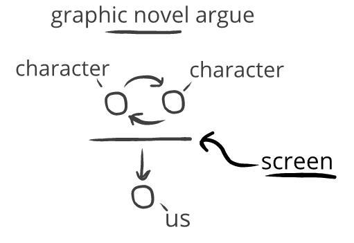
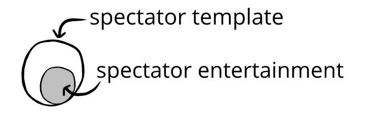

In spectator templates, there’s a “screen” between us and what we’re spectating:
This screen is like a one-way emotional mirror: our evaluations change because of them, but their evaluations don't change because of us.
Sometimes this screen is permeable, like if we’re listening to two of our friends argue. Other times, this screen is impermeable, like if we’re reading a graphic novel about two friends arguing.
Try as we might, we'll never influence the characters in a graphic novel—the impermeable screen creates a closed emotional system.
By contrast, watching our friends argue isn’t a closed emotional system. Just by being present, there's mutual reactivity—and we could become more involved at any moment we choose.
Consider:
Some spectator entertainment has impermeable screens, like static movies—where yelling at a screen does nothing. But when we watch a play, there's a permeable screen—if we laugh or yell at the stage, the mutual connectivity comes into play.
We often find spectator entertainment with permeable screens more vivid and interesting—the permeable screen feels dynamic, and allows for subtle kinds of audience participation. By contrast, spectator entertainment with impermeable screens often has the feeling of excluding us.
A spectator template doesn't mean something is spectator entertainment.
When we watch both spectator wresting and interpersonal wresting from the sidelines, it's only the spectator wrestling that's prioritizing our emotions (spectator template and spectator entertainment). The interpersonal wrestlers don't really care about our emotions (spectator template without being spectator entertainment).
This is why it's not spectator entertainment when we watch our friends argue or overhear a discussion the table over. We're part of an spectator template—but that doesn't mean it's spectator entertainment.